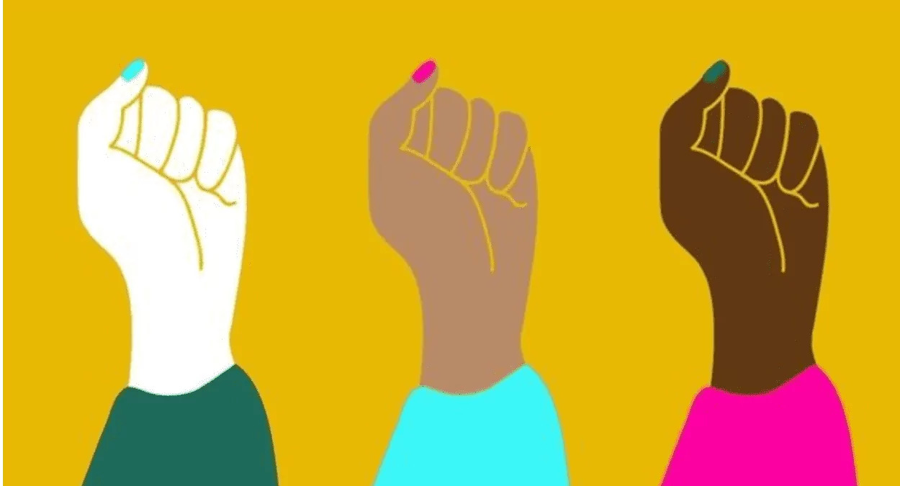

O que é?
O empoderamento e apoio a comunidades marginalizadas referem-se a ações que visam fortalecer e ampliar as oportunidades de grupos que historicamente enfrentam discriminação e exclusão social.
Para que serve?
Essas ações servem para combater a desigualdade, promover a inclusão social, empoderar indivíduos e comunidades e garantir que todos tenham acesso igualitário a oportunidades e direitos.
Como usar?
Busque formas de apoiar e promover a inclusão de comunidades marginalizadas, seja por meio de parcerias, apoio financeiro, sensibilização, advocacia e engajamento em projetos que visam reduzir a desigualdade.
Como isso ajuda o mundo?
O empoderamento e apoio a comunidades marginalizadas ajudam a construir uma sociedade mais justa e igualitária. Ao promover a inclusão, oferecer oportunidades e lutar contra a discriminação, você contribui para a transformação de estruturas sociais desiguais e para a construção de um mundo mais equitativo e solidário.